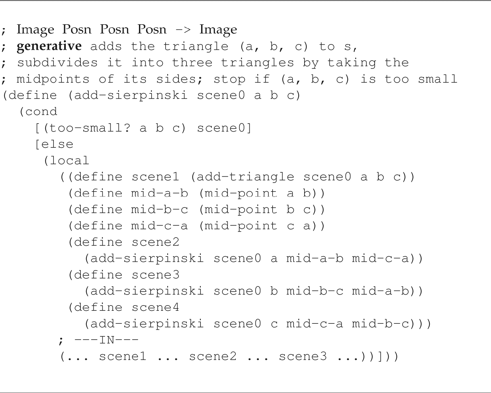
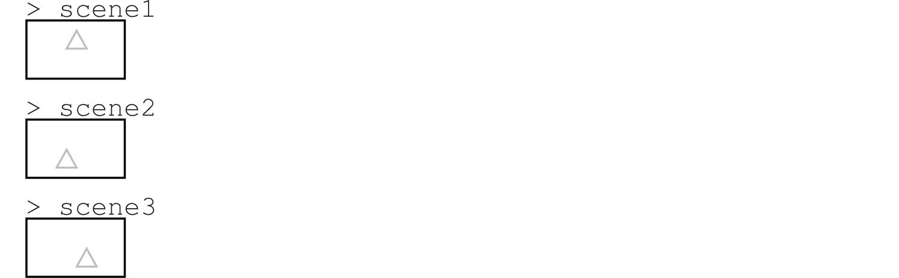
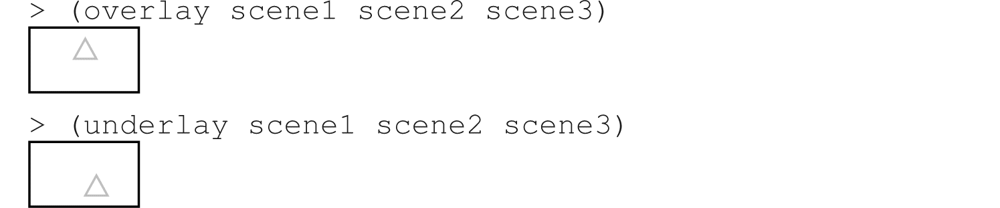
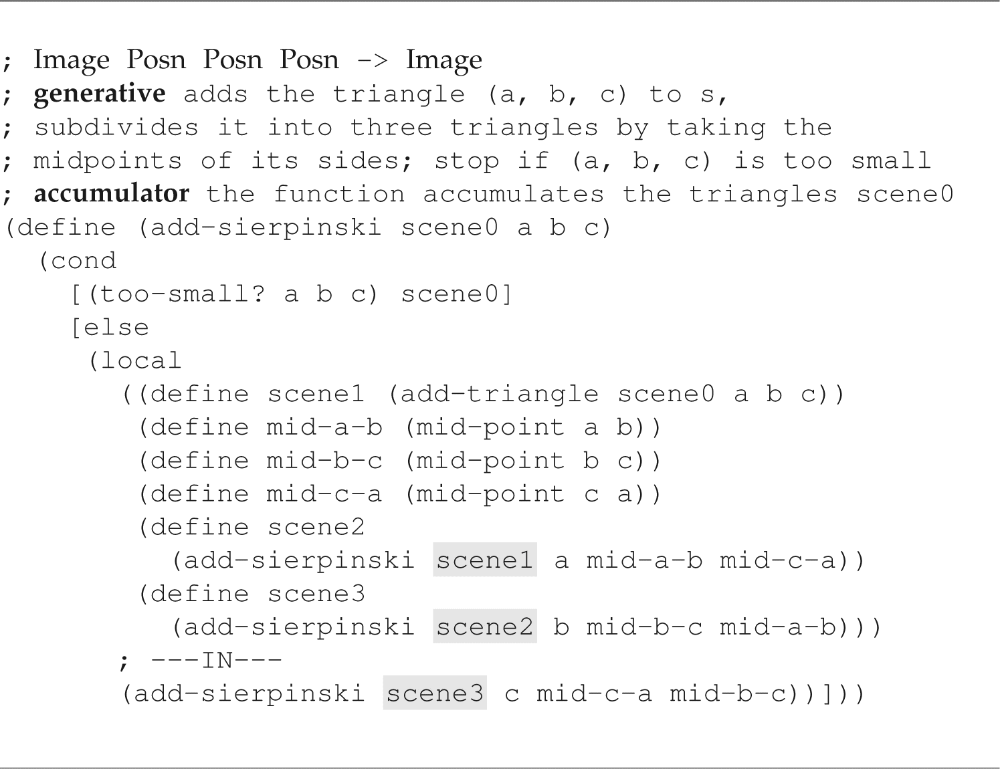
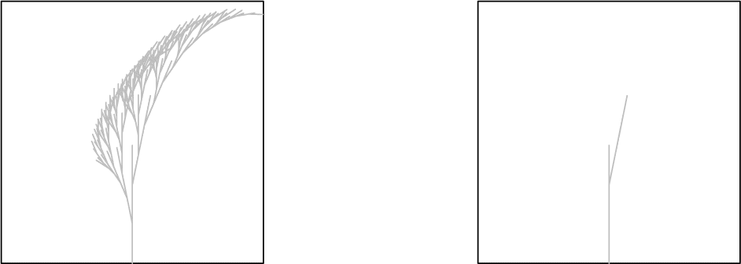
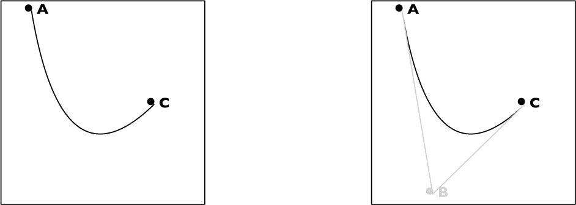
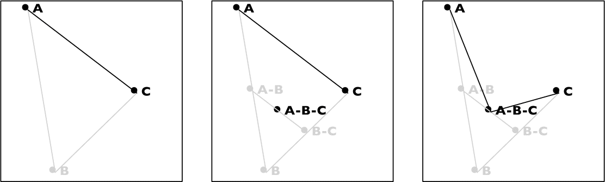

33.3 Accumulators as Results
Take another look at figure 157. It displays a Sierpinski triangle and a suggestion how to create it. Specifically, the images on the right explain one version of the generative idea behind the process:
The given problem is a triangle. When the triangle is too small to be subdivided any further, the algorithm does nothing; otherwise, it finds the midpoints of its three sides and deals with the three outer triangles recursively.
In contrast, chapter 27.1 shows how to compose Sierpinski triangles algebraically, a process that does not correspond to this description.
Most programmers expect “draw” to mean the action of adding a triangle to some canvas. The scene+line function from the 2htdp/image library makes this idea concrete. The function consumes an image s and the coordinates of two points and adds a line through these two points to s. It is easy to generalize from scene+line to add-triangle and from there to add-sierpinski:
Sample Problem Design the add-sierpinski function. It consumes an image and three Posns describing a triangle. It uses the latter to add a Sierpinski triangle to this image.
Note how this problem implicitly refers to the above process description of how to draw a Sierpinski triangle. In other words, we are confronted with a classical generative-recursive problem, and we can start with the classic template of generative recursion and the four central design questions:
• The problem is trivial if the triangle is too small to be subdivided.
• In the trivial case, the function returns the given image.
• Otherwise the midpoints of the sides of the given triangle are determined to add another triangle. Each “outer” triangle is then processed recursively.
• Each of these recursive steps produces an image. The remaining question is how to combine these images.
Figure 191 shows the result of translating these answers into a skeletal definition. Since each midpoint is used twice, the skeleton uses local to formulate the generative step in ISL+. The local expression introduces the three new midpoints plus three recursive applications of add-sierpinski. The dots in its body suggest a combination of the scenes.

Figure 191: Accumulators as results of generative recursions, a skeleton
Exercise 525. Tackle the wish list that the skeleton implies:
; Image Posn Posn Posn -> Image
; adds the black triangle a, b, c to scene
(define (add-triangle scene a b c) scene)
; Posn Posn Posn -> Boolean
; is the triangle a, b, c too small to be divided
(define (too-small? a b c)
#false)
; Posn Posn -> Posn
; determines the midpoint between a and b
(define (mid-point a b)
a)
Design the three functions.
Domain Knowledge (1) For the too-small? function it suffices to measure the distance between two points and to check whether it is below some chosen threshold, say, 10. The distance between (x0, y0) and (x1, y1) is
that is, the distance of (x0 − x1, y0 − y1) to the origin.
The midpoint between points (x0, y0) and (x1, y1) has as coordinates the midpoints between the respective x and y coordinates:
Now that we have all the auxiliary functions, it is time to return to the problem of combining the three images that are created by the recursive calls. One obvious guess is to use the overlay or underlay function, but an evaluation in the interactions area of DrRacket shows that the functions hide the underlying triangles.
Specifically, imagine that the three recursive calls produce the following empty scenes, enriched with a single triangle in appropriate locations:

A combination should look like this figure:
But, combining these shapes with overlay or underlay does not yield this desired shape:

Indeed, the image library of ISL+ does not support a function that combines these scenes in an appropriate manner.
Let’s take a second look at these interactions. If scene1 is the result of adding the upper triangle to the given scene and scene2 is the result of adding a triangle on the lower left, perhaps the second recursive call should add triangles to the result of the first call. Doing so would yield
and handing over this scene to the third recursive call produces exactly what is wanted:
Figure 192 shows the reformulation based on this insight. The three highlights pinpoint the key design idea. All concern the case when the triangle is sufficiently large and it is added to the given scene. Once its sides are subdivided, the first outer triangle is recursively processed using scene1, the result of adding the given triangle. Similarly, the result of this first recursion, dubbed scene2, is used for the second recursion, which is about processing the second triangle. Finally, scene3 flows into the third recursive call. In sum, the novelty is that the accumulator is simultaneously an argument, a tool for collecting knowledge, and the result of the function.

Figure 192: Accumulators as results of generative recursion, the function
To explore add-sierpinski it is best to start from an equilateral triangle and an image that leaves a sufficiently large border. Here are definitions that meet these two criteria:
(define MT (empty-scene 400 400))
(define A (make-posn 200 50))
(define B (make-posn 27 350))
(define C (make-posn 373 350))
(add-sierpinski MT A B C)
Check what kind of Sierpinski fractal this code fragment delivers. Experiment with the definitions from exercise 525 to create sparser and denser Sierpinski triangles than the first one.
Exercise 526. To compute the endpoints of an equilateral Sierpinski triangle, draw a circle and pick three points on the circle that are 120 degrees apart, for example, 120, 240, and 360.
Design the function circle-pt:
(define CENTER (make-posn 200 200))
(define RADIUS 200)
; the radius in pixels
; Number -> Posn
; determines the point on the circle with CENTER
; and RADIUS whose angle is
; examples
; what are the x and y coordinates of the desired
; point, when given: 120/360, 240/360, 360/360
(define (circle-pt factor)
(make-posn 0 0))
Domain Knowledge This design problem calls on knowledge from mathematics. One way to view the problem is as a conversion of a complex number from the polar-coordinate representation to the Posn representation. Read up on make-polar, real-part, and imag-part in ISL+. Another way is to use trigonometry, sin and cos, to determine the coordinates. If you choose this route, recall that these trigonometry functions compute the sine and cosine in terms of radians, not degrees. Also keep in mind that on-screen positions grow downward, not upward. 
Exercise 527. Take a look at the following two images:

They demonstrate how to generate a fractal Savannah tree in the same way that figure 156 shows how to draw a Sierpinski triangle. The image on the left shows what a fractal Savannah tree looks like. The right one explains the generative construction step.
Design the function add-savannah. The function consumes an image and four numbers: (1) the x-coordinate of a line’s base point, (2) the y-coordinate of a line’s base point, (3) the length of the line, and (4) the angle of the line. It adds a fractal Savannah tree to the given image.
Unless the line is too short, the function adds the specified line to the image. It then divides the line into three segments. It recursively uses the two intermediate points as the new starting points for two lines. The lengths and the angles of the two branches change in a fixed manner, but independently of each other. Use constants to define these changes and work with them until you like your tree well enough.
Hint Experiment with shortening each left branch by at least one third and rotating it left by at least 0.15 degrees. For each right branch, shorten it by at least 20% and rotate it by 0.2 degrees in the opposite direction.
Géraldine Morin suggested this exercise.
Exercise 528. Graphics programmers often need to connect two points with a smooth curve where “smooth” is relative to some perspective. Here is are two sketches:

The left one shows a smooth curve, connecting points A and C; the right one supplies the perspective point, B, and the angle of an observer.
One method for drawing such curves is due to Bézier. It is a prime example of generative recursion, and the following sequence explains the eureka! behind the algorithm:

Consider the image on the left. It reminds you that the three given points determine a triangle and that the connection from A to C is the focal point of the algorithm. The goal is to pull the line from A to C toward B so that it turns into a smooth curve.
Now turn to the image in the middle. It explains the essential idea of the generative step. The algorithm determines the midpoint on the two observer lines, A-B and B-C, as well as their midpoint, A-B-C.
Finally, the right-most image shows how these three new points generate two distinct recursive calls: one deals with the new triangle on the left and the other one with the triangle on the right. More precisely, A-B and B-C become the new observer points and the lines from A to A-B-C and from C to A-B-C become the foci of the two recursive calls.
When the triangle is small enough, we have a trivially solvable case. The algorithm just draws the triangle, and it appears as a point on the given image. As you implement this algorithm, you need to experiment with the notion of “small enough” to make the curve look smooth.